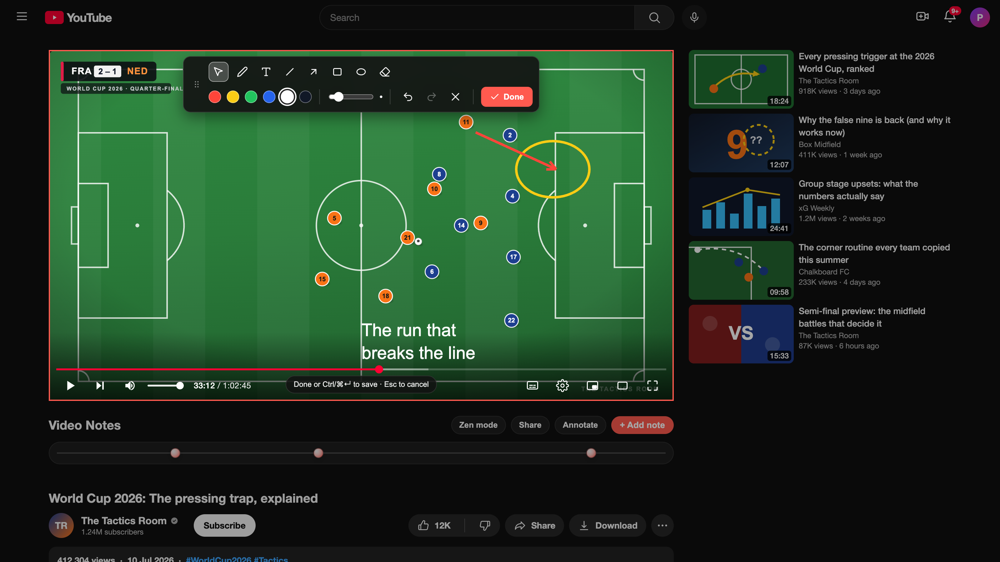

Mark it your way.
Pen, arrows, lines, shapes, text, colors, stroke weights, object eraser, undo and redo.
Video Notes
A small Chrome extension that anchors your thoughts to the exact second of the video that produced them. Press a key, write or draw, return at will.
Capture
Press ⌥ N on macOS, or Alt N on Windows, anywhere on a watch page. The video pauses, a writing surface opens at the current timestamp, you type. Hit return — the player picks up where you stopped.
See it in action ›Visual annotations
Pause on any frame and annotate directly over the video. Circle the detail, trace the path, label the idea — then save it to that exact timestamp.

Pen, arrows, lines, shapes, text, colors, stroke weights, object eraser, undo and redo.
The video pauses while you draw. Choose Done and playback returns exactly where you stopped.
Drawing markers show a visual preview on the timeline and a clear badge in the popup. Open one to return to its exact frame, paused with the drawing visible.
Timeline
Every note becomes a marker on the timeline. Hover for a preview. Click to jump straight to the moment that produced it. Six months later, the path back is still one second of effort.
Search
Click the extension icon. A searchable index of every note across every video appears, sorted by timestamp. Type to filter. Open any note at its exact second; drawing notes reopen paused with the annotation placed over the saved frame.
Try the search ›Review
Switch on new-tab flashcards and every blank tab becomes one multiple-choice question — written by Gemini from the notes you actually took. Answer it, read the note behind it, and jump straight to that second of the video. Bring your own free key; it stays on your device.
Privacy
Every note lives in chrome.storage.local on your machine. No accounts. No sync. No telemetry.
And more
Hide recommendations, comments, merchandise. Promote theater mode. Preference persists.
Delete on press-and-hold with an animated progress ring — enabled by default, toggle off in settings.
Prefer a focused session? Open the popup and play the whole deck end to end — the same Gemini-made questions, scored as you go.
Editable template — *video-title*, *time-url*, *note*. Drop into Obsidian or Notion.
Get Video Notes
Couple seconds to install. No account, no signup. The next video you open is ready to be noted down at the exact second, in your own words.